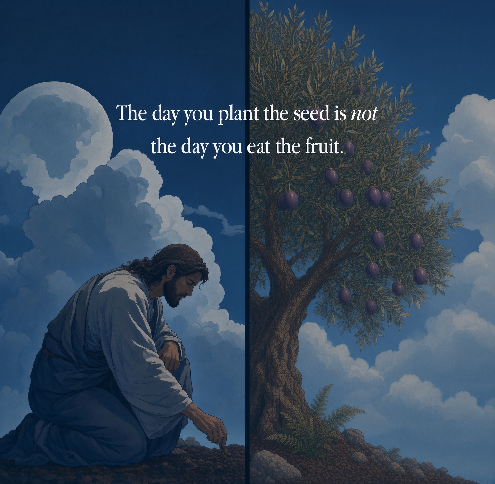
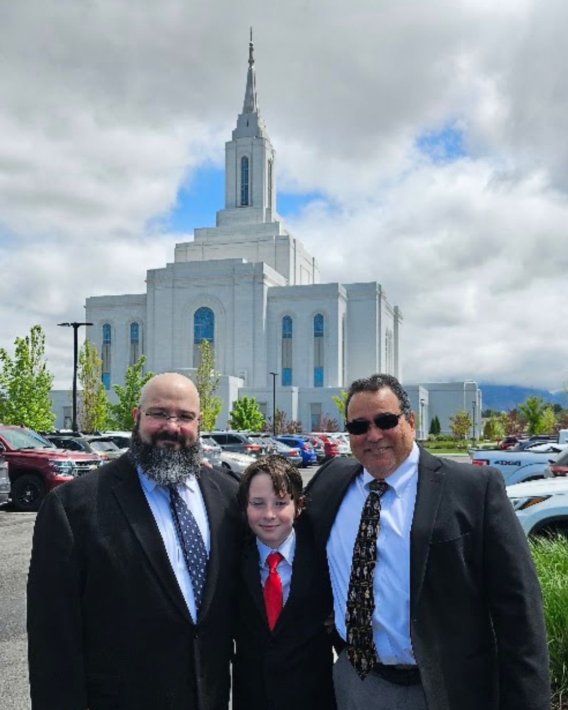

Talks
Messages given in sacrament meeting and other settings.
Most of these talks were reconstructed from outlines, notes, recordings, and memory. They are faithful to what was spoken, but they are not verbatim transcripts.

Planted in the Plan
An Infinite Atonement

That I May Heal You
Health in the Navel
What Shall a Man Give?
Arise from the Dust
 ← Back to home
← Back to home